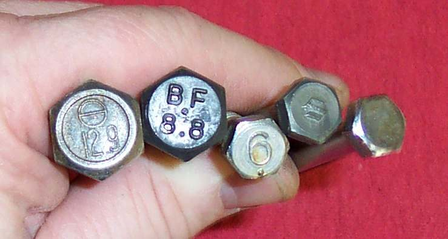

A bolt works like a spring. As it tightens it stretches, and the stretch is what holds the parts together. Different bolts are made of different steel, and the right one matters. A weak bolt on the cylinder head or cam sprocket can destroy an engine. A fender bolt does not need that strength.
Safety
- Never put a weaker bolt where a stronger one is called for.
- Do not reuse a bolt that stretched or gave way during tightening. If you feel a bolt yield, replace it.
Steps
- Keep every bolt, nut and washer from the job in a labelled tray. Replacing a full set can cost more than the job.
- Read the head. Marks show the strength grade. Many bolts have no mark, or only a maker's mark, so keep bolts that sit in different places apart.
- Match the thread. A thread screwed into a casting is normally coarse pitch. A bolt or stud that takes a nut is normally fine pitch. Measure with a thread gauge and check the manual.
- Look at the shaft. A waisted bolt (a thinner section in the middle) is made for high stress, for example the cylinder head. Replace like with like.
- Check for left-hand threads. If a nut will not turn the usual way and is not rusted, try the other way. The manual lists them.
- Look at the locking method. Lock washers can be spring, wave, toothed or tabbed. Nylon-collar and metal-collar locknuts can usually be reused several times. Tab washers and key nuts must be renewed after they are bent and removed. Some joints use thread locker or safety wire.
- Rolled threads are stronger than cut threads. Do not cut extra thread on a bolt unless you must.
- Tighten to the torque in your manual with a torque wrench: Use a torque wrench.
Thread standards
- Metric (ISO, JIS) and American unified threads use a 60 degree thread. Older British Whitworth, BSF and BA threads have a different angle and rounded tops. They do not mix, even when the size looks the same.
- Before buying a bolt, tap or thread insert, measure the size and pitch: Identify a thread standard and pitch.
- A pulled-out thread in a casting: A bolt hole thread is stripped.
Check your work
- The bolt is the right size, grade and thread, and has its washer or lock.
- It stays tight after the first ride and a recheck.
If it did not fix the problem
- Bolts keep coming loose: Nuts and bolts keep coming loose.
- Head damaged: Screw or bolt will not come out.